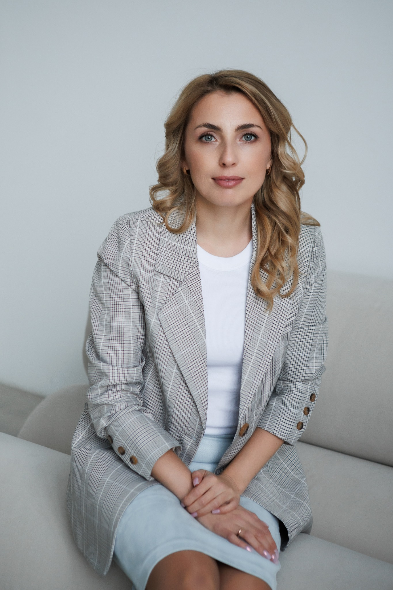

01
Информация и аналитика
Работа с документами, таблицами и данными, подготовка отчётности, исследования и структурирование информации. Google Workspace и офисные инструменты.
Помогаю руководителям организовывать процессы, координировать команды и превращать большой поток задач в понятную систему. Использую AI и цифровые инструменты, чтобы работать быстрее и эффективнее.

Надёжная организационная поддержка, ясная коммуникация и интерес к современным технологиям.
Закрываю организационные и операционные задачи, чтобы руководитель мог сосредоточиться на главном.
Организация задач, административная помощь, подготовка материалов, взаимодействие с командой и подрядчиками.
Сопровождение процессов онлайн-школ, модерация вебинаров, поддержка пользователей и работа с учебными платформами.
Поиск и анализ информации с помощью AI-инструментов, работа с Google Таблицами, подготовка отчётности и оптимизация рутины.
Участие в подборе и адаптации сотрудников, контроль задач, понятная коммуникация и обучение.
Telegram-размещения и рассылки, брифы подрядчикам, лендинги, презентации и материалы.
Помощь пользователям, администрирование онлайн-обучения, настройка сервисов и решение текущих вопросов.
Использую современные цифровые решения и AI, чтобы систематизировать информацию, поддерживать команду и делать рабочие процессы проще и эффективнее.
Работа с документами, таблицами и данными, подготовка отчётности, исследования и структурирование информации. Google Workspace и офисные инструменты.
ChatGPT, Claude и другие AI-инструменты для анализа, подготовки материалов, поиска решений и оптимизации повседневных задач.
Работа с CRM-системами, чат-ботами, рассылками и цифровыми платформами для поддержки и автоматизации бизнес-процессов.
Планирование и координация задач, командное взаимодействие, сопровождение онлайн-проектов и организация рабочих процессов.
Короткое видео поможет работодателю познакомиться со мной до личного общения.
Видео добавим сюда отдельным файлом. Пожалуйста, загрузите ролик ещё раз — исходный файл сейчас недоступен в рабочей папке сайта.
Открыта к предложениям по позициям бизнес-ассистента и ассистента руководителя.